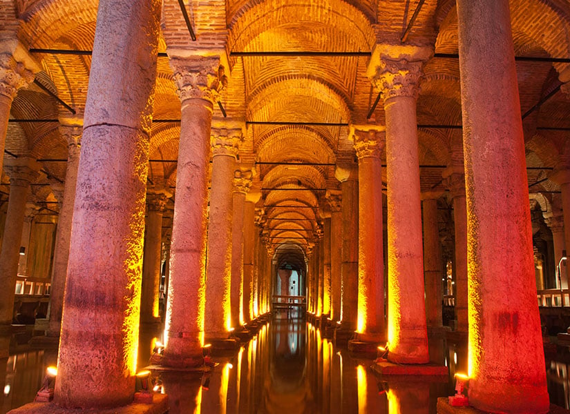

İstanbul , yerleşim tarihi son yapılan Yenikapı'daki kazılarla bulunan liman doğrultusunda 8500 yıl, kentsel tarihi yaklaşık 3.000, başkentlik tarihi 1600 yıla kadar uzanan Avrupa ile Asya kıtalarının kesiştiği noktada bulunan bir dünya kentidir. İstanbul Roma, Bizans ve Osmanlı döneminde başkent olarak kullanılmıştır._______________ İstanbul'un nüfusu, bir önceki yıla göre 252 bin 27 kişi azalarak 15 milyon 655 bin 924 kişi oldu.
ayasofya Yerebatan Sarnıcı Galata Kulesi Topkapı Sarayı